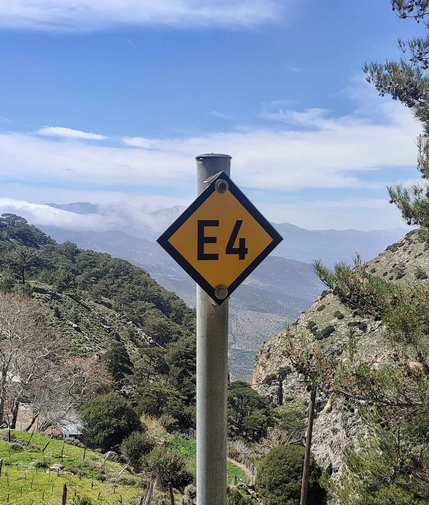
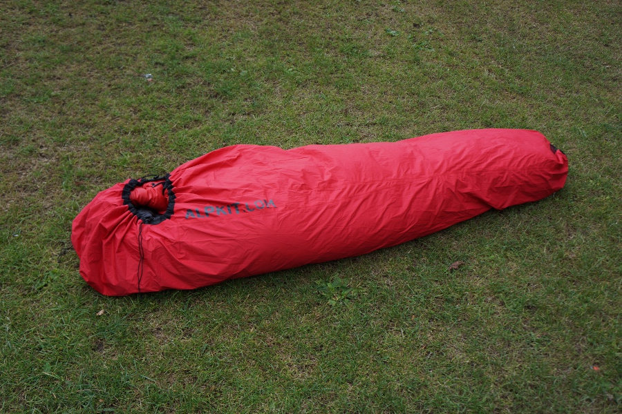
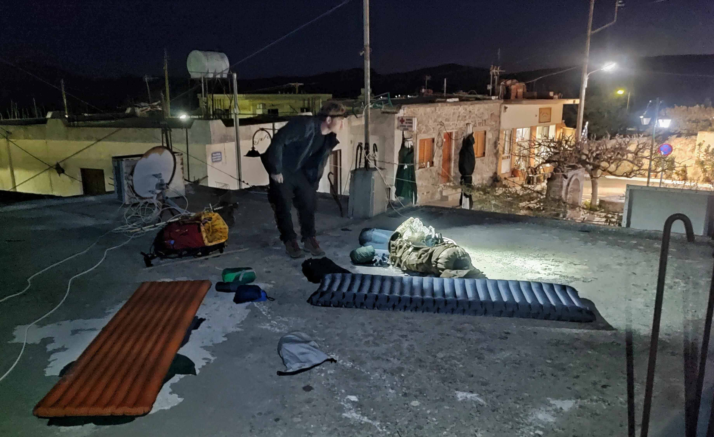
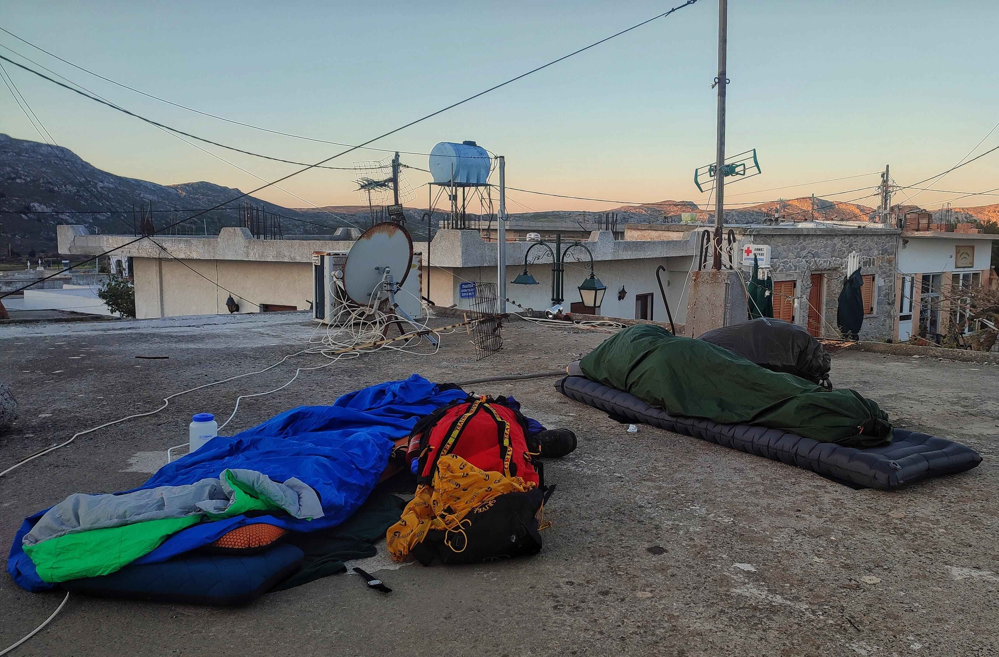
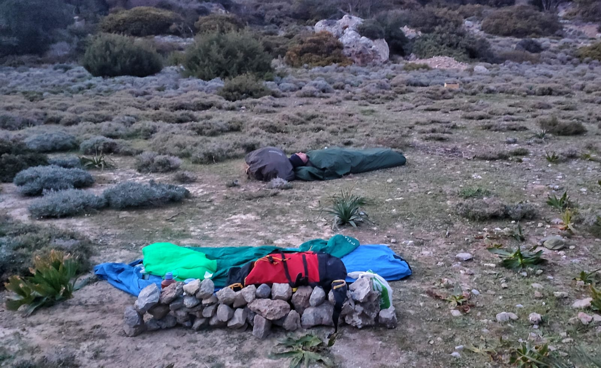
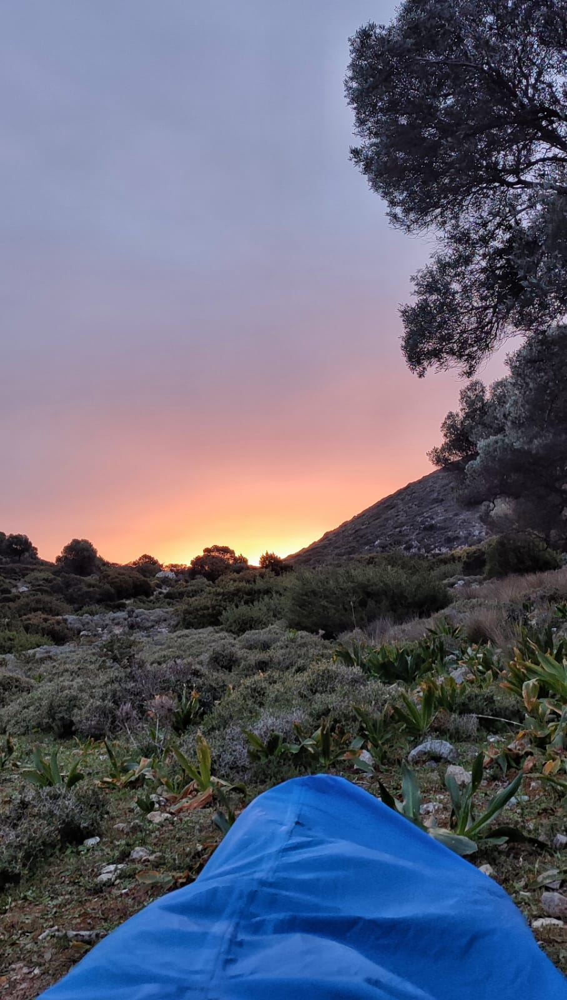

Bivvying the E4
Me and a good friend, Daf, hiked 250km across the Greek island of Crete, following the E4 trail.
We took:
- hiking boots
- spare shoes for camp
- spare clothes (not too many, hand-washing throughout)
- sunhat + sunglasses + sunscreen
- toiletries
- first aid kit with blister plasters
- sleeping bag + mat
- hiking poles
- phone charger + powerbank + headtorch
- a pack of cards
Fully packed our rucksacks both weighed 14kg.

We were conscious of how hilly the route is, and how heavy our packs already were without food and water. Adding a tent would have added even more weight, and after hiking 10 hours over mountains carrying a full pack in the sun, crawling into a coffin-sized compartment and sleeping within breathing distance of each other’s unshowered forms wasn’t the most promising of horizons.
Instead of taking a tent, we took bivvy bags.
A bivvy bag is a waterproof lining for your sleeping bag. The larger ones are big enough to fit sleeping mats inside, and everything can be contained, waterproofed, and made cosy. Bivvy bags are small and light, quick to unpack and setup, and mean that it’s possible to sleep anywhere, outside, often unnoticed.
We knew that accommodation would be possible on Crete, although not consistently, and on our first full day of hiking we were unable to find a place to stay. We arrived at a village canteen, and after eating dinner under darkening skies the owner saw our packs and gestured to us, where would we stay? We pointed to some nearby fields and she shook her head and pointed to a set of stairs beside her restaurant. I was unsure where the stairs led - to an upstairs room? - but regardless we were extremely thankful for her kindness. The stairs led to the roof of the restaurant, which was flat and away from the village dogs. This is where we slept and it felt like a huge win.
At first sleeping without a roof over your head can be disconcerting, as if something fundamental to the experience of sleep is missing. But once lying down and comfortable amongst the various zips and bags and mats, you will realise that this is actually a perfectly acceptable method of sleeping. If the sky is clear you’ll see the stars, and will then probably wonder why you haven’t tried this sooner.
The temperature dropped significantly during our first night, and having tried to save as much weight as possible I had optimistically only brought a summer sleeping bag, so I slept wearing most of the clothing that was in my rucksack. When sleeping outside I find it’s common to wake up more often than usual, and we woke up tired, groggy, but somehow victorious that we were doing the thing that we’d said we’d do.
On one of our longer days we hiked 30km with 1100m elevation, and as the sun dropped our bodies were ready to stop. We were in the mountains and it took time to find a suitable area, but we settled upon a small square of relatively flat land, and packs were dropped and beds unpacked. The wind was strong through the valley and I began construction of the Great Wall of Crete, which I was adamant would provide a great deal of protection and solace throughout the night. Daf watched on from his bed with scepticism.
I'd like to tell you that the wall rose proudly to form 360 degrees of windproof comfort, but at some point I ran out of rocks (and motivation) and climbed into my bivvy to sleep. The wind howled through the night but we were so exhausted we slept for 12 hours. At one point it started to rain, but there is a drawcord on the hood of the bivvy bag which closes and keeps everything dry and contained. In the morning we woke up to blue skies and a new day.
After 2 weeks we had made it 70% across the island, and it was time to go home. I had originally hoped to cross the whole island in the 15 hiking days that we had available, but after the first week we realised that it would be more enjoyable (and realistic) to take the journey as it came and not stress over daily distances and targets. In the end we averaged 25km per day, and the average elevation was 600m which, combined with our heavy packs, made the trek a challenging one.
Bivvying reduced our pack weight considerably, and there’s something about sleeping outside under the stars which is unique and wonderful. You should give it a try.
